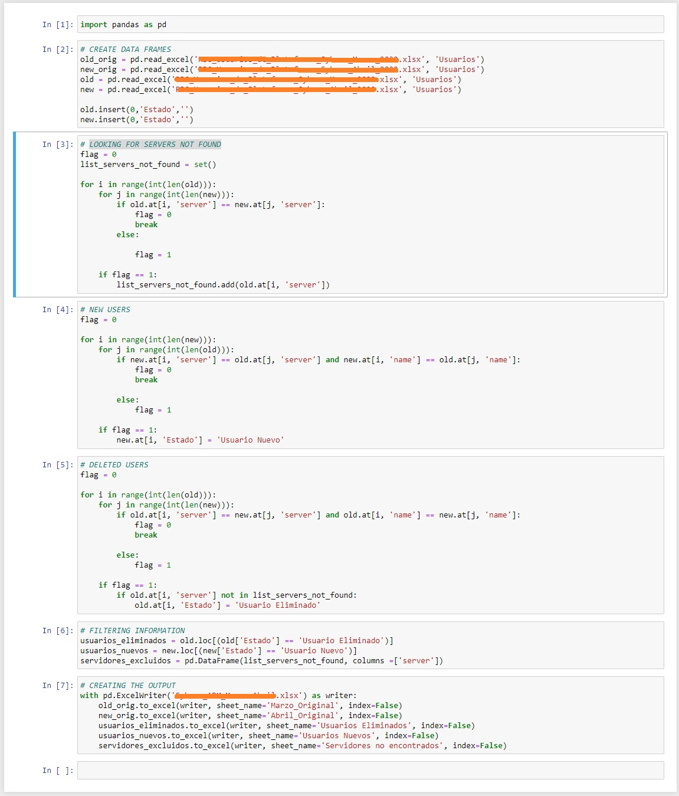

Welcome to this journey, everybody is invited to explore and collaborate!
Hi there!
A couple of weeks ago I created a script that was done with pure Python but because information went bigger and the size of the script too, I decided to use pandas in Jupyter Notebook to do the same but better!
The script will work with two excel files that have all information needed spredeed in multiple columns.
Pandas give us the chance to save this info in a DataFrame, process the information and create a new Excel file with the information gathered.
For a better presentation I paste a print screen from my Jupyter Notebook.
Let's start!
Feel free to contact me!